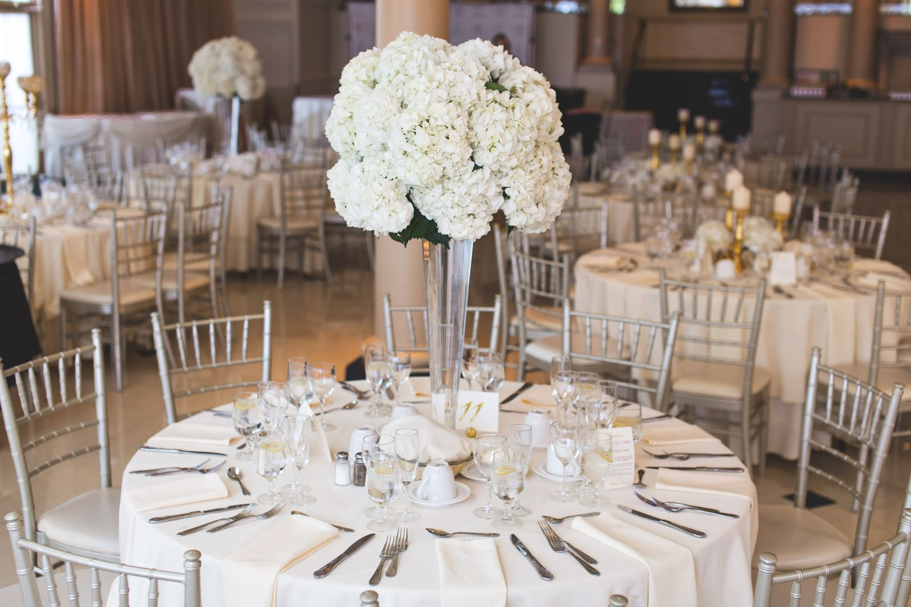
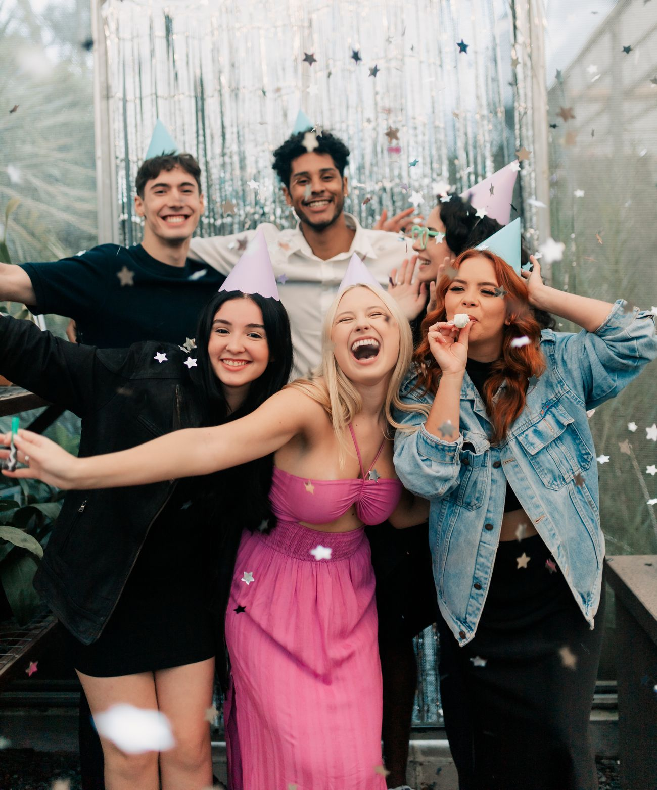
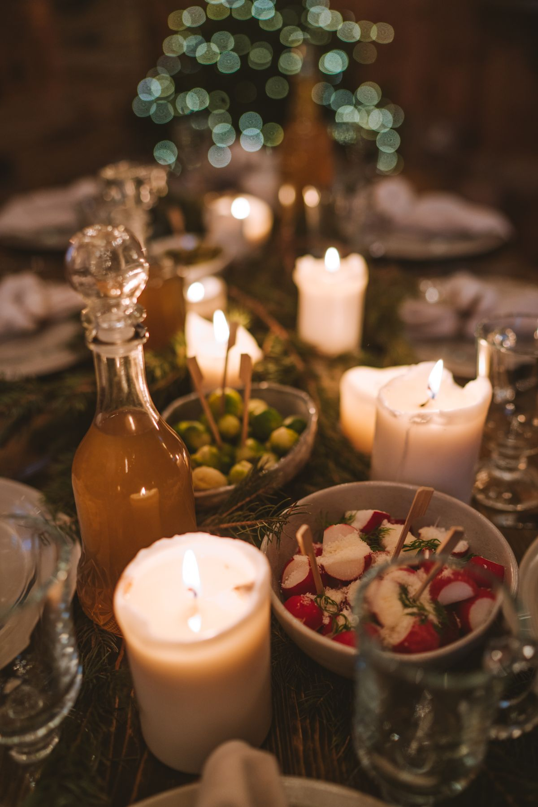
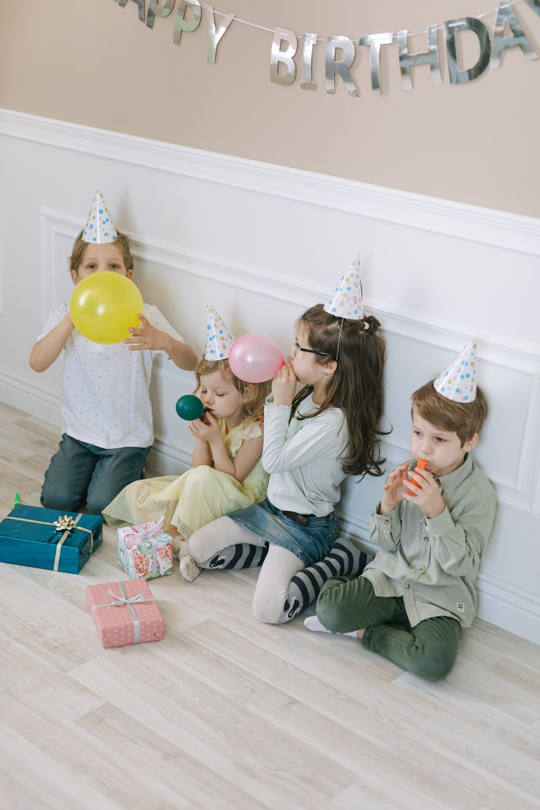

СвадьбаЭлегантная свадьба
Анна & Илья
14 августа 2027 · Дворец бракосочетания «Лира»
Спокойная палитра шалфея и шампани, регистрация и банкет в двух местах, вишлист и ответ с трансфером.
Открыть пример →

День рожденияЯркий день рождения
Вере — 30!
20 марта 2027 · Лофт «Неон»
Тёмный неон, караоке-баттл и танцы, дресс-код с одним кислотным акцентом.
Открыть пример →

ЮбилейТёплый юбилей
Николаю Петровичу — 70
12 июня 2027 · Ресторан «Старая липа»
Тёплые семейные тона, поздравления и песни под гитару, «Как всё начиналось» по годам, крупный шрифт и кнопка звонка организатору.
Открыть пример →

Детский праздникВесёлый детский праздник
Тёме — 7 лет!
17 апреля 2027 · Батутный парк «Прыг-Скок»
Конфетти и яркие плашки, пиратский квест и батуты, анкета для родителей: кто и во сколько заберёт ребёнка.
Открыть пример →